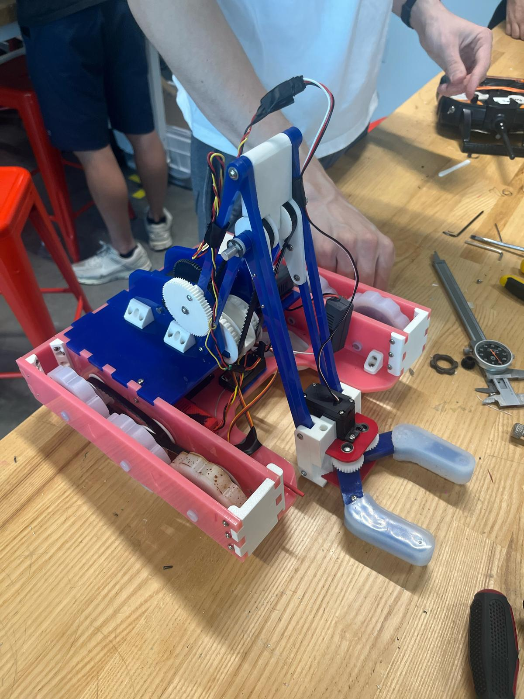
Two-Speed 6WD Robot with 4-Bar Extending Claw
Summary
As part of a team of six, I designed, manufactured, and assembled a field-competition robot balancing maneuverability, scoring flexibility, and robustness under strict time, material, and actuator constraints. The robot featured a two-speed, gear-shifting 6WD drivetrain, a four-bar arm, and a servo-driven silicone claw.
Context
A team-based mechanical design competition (ES 51: Turf Wars) involving 4-minute head-to-head robot matches on a turf field with 30° ramps, strict hardware constraints, and diverse game objects.
Design Goal:
We aimed to build a robot that balanced:
- Quick maneuverability
- Ramp-climbing torque
- In-game strategy adaptability
- High-scoring capability
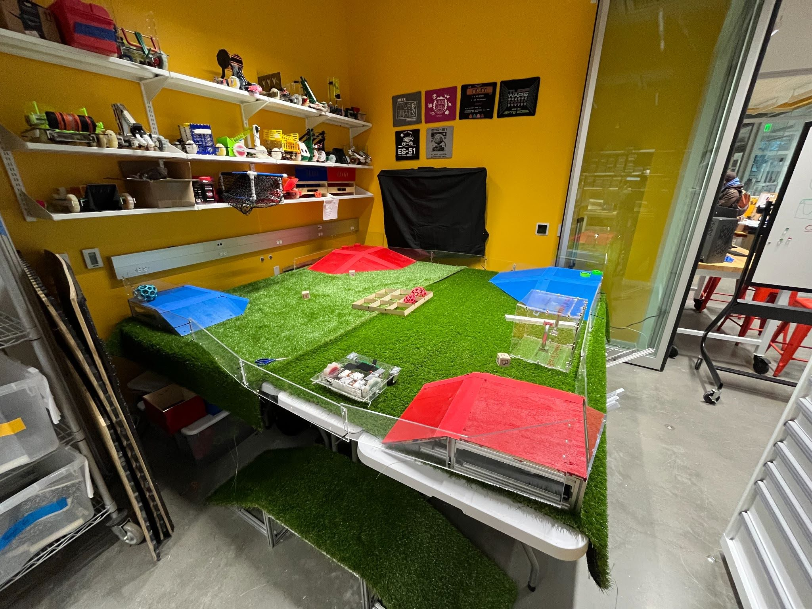
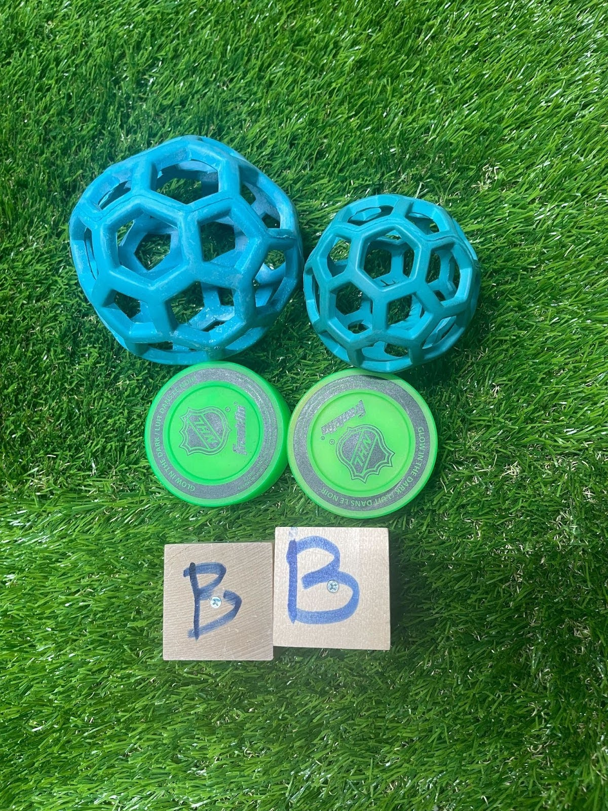
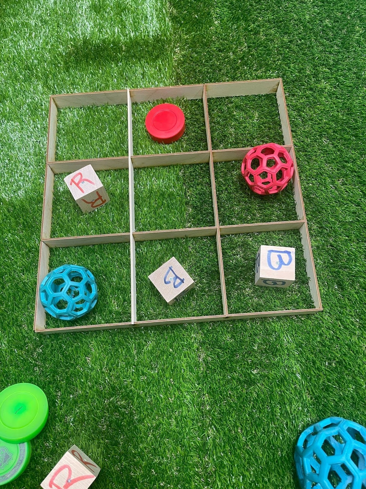
My Role
I served as the team lead/organizer, owning these roles:
- Managed team project timeline accountability
- Authored match strategy design
- Manufactured wheels and axles and assembled them
While calculations, CAD design, and other manufacturing elements were shared across the team, I focused on coordinating design decisions and ensuring the robot could be manufactured, built, and deployed on time.
Collaborators: Grant Kaufmann, Jack Kovac, Sarah Li, Fotis Paganis, Abby Yoon
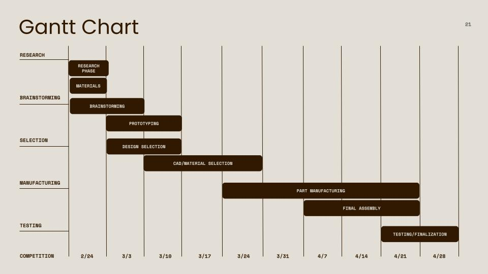
Design Prototyping and Selection
Drove early-stage prototyping and design selection (sketches to cardboard builds) culminating in a two-speed 6WD drivetrain and four-bar telescoping arm.
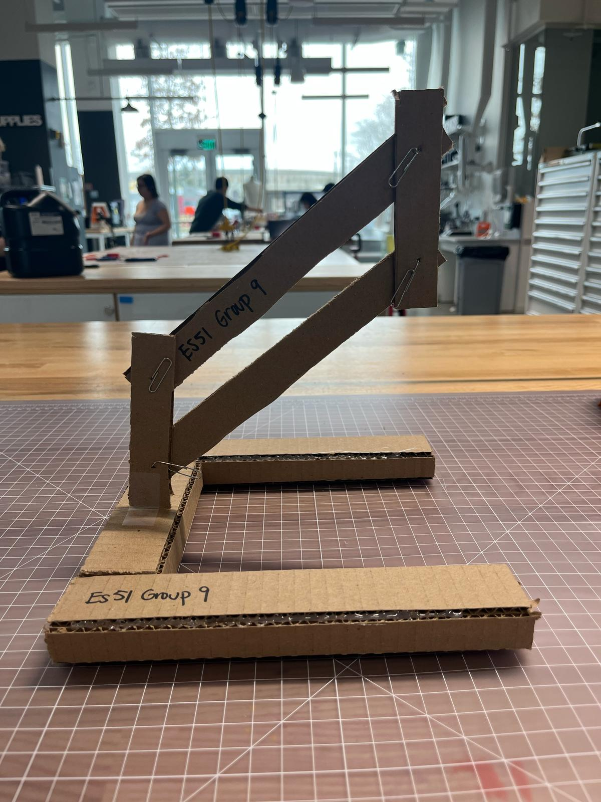
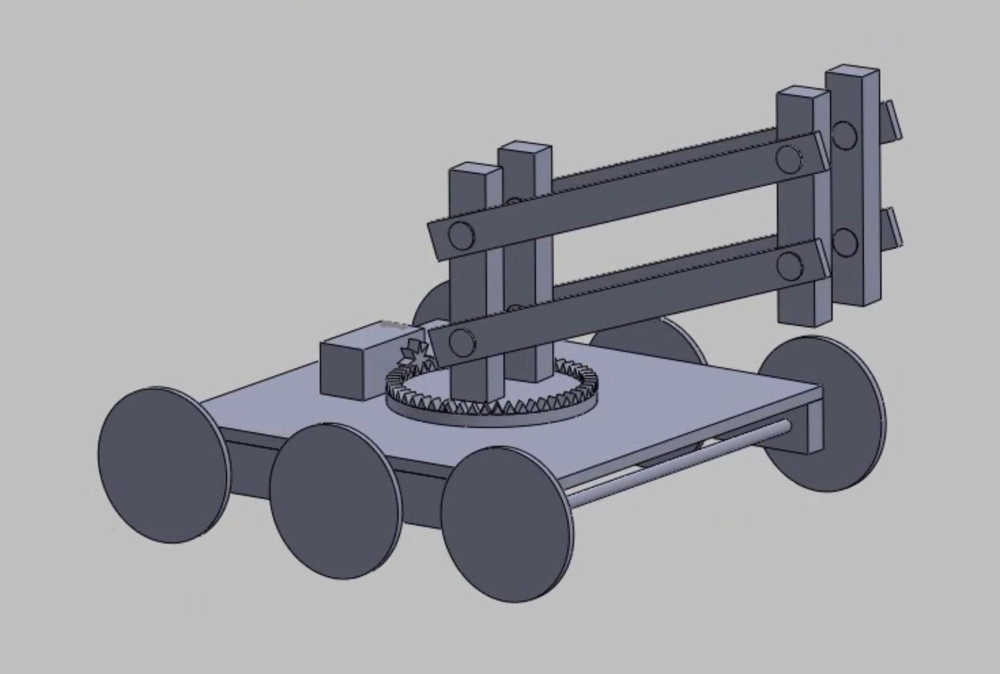
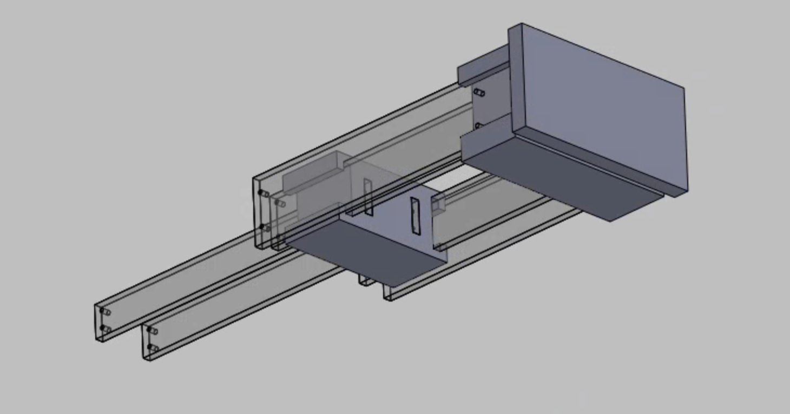
Implementation / Build Evidence
Built and integrated drivetrain + manipulation subsystems using laser-cut acrylic chassis plates, 3D printed mounts/gears, silicone-cast wheels/gripper pads, and lathe-turned shafts to meet tight tolerances.
Build Process Highlights
Final build overview with fabrication and integration decisions that mattered most on competition day.
- Manufacturing ownership: produced wheels + shafts and handled significant drivetrain/structure assembly.
- Integration focus: prioritized tolerance stackups, fastener access, and assembly order to reduce last-minute failures.
- Serviceability: designed for quick between-match fixes (easily separable chassis and arm sections).
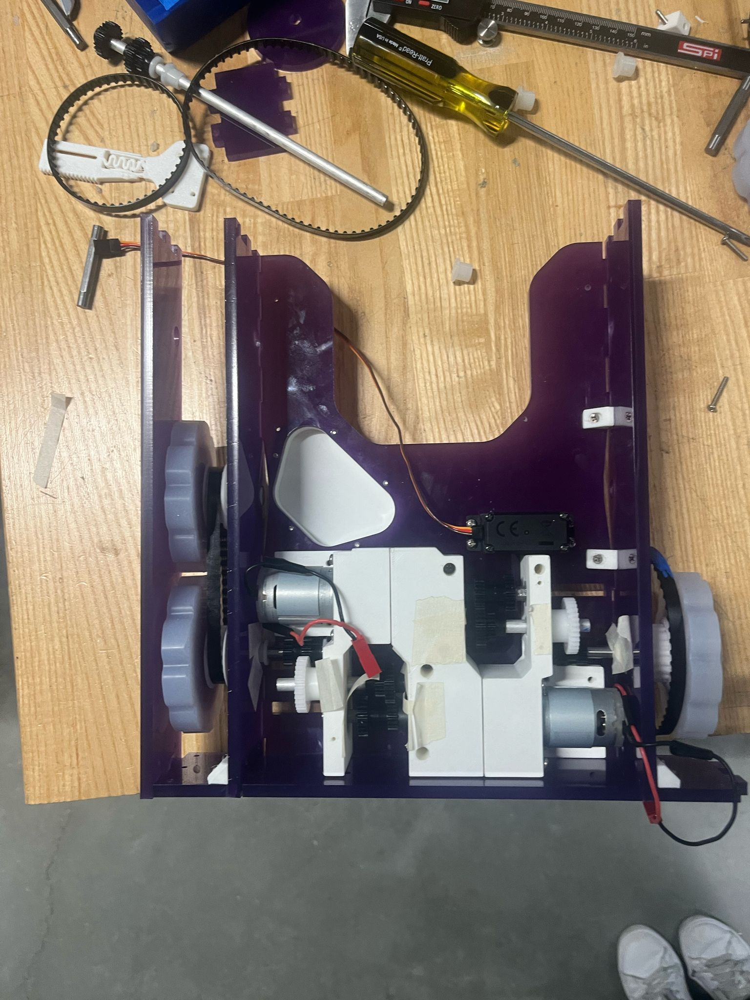
Chassis assembly in progress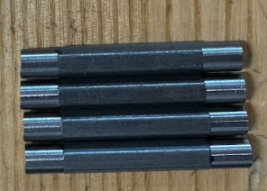
Lathe-turned hex shafts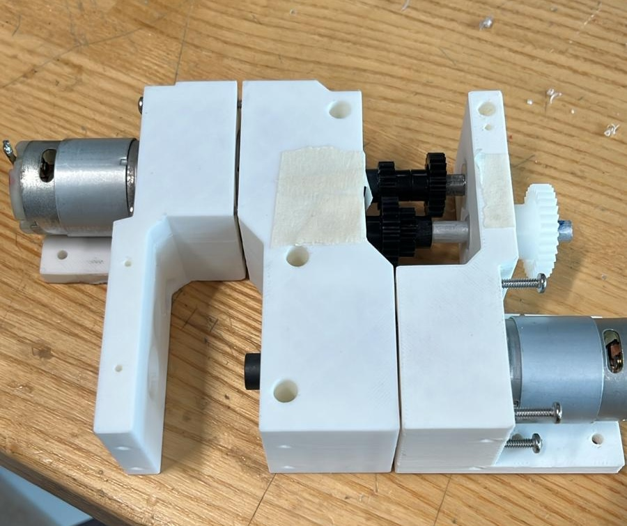
Gearbox assemblyFinal Report (PDF)
Full technical documentation of the robot's drivetrain, arm/claw mechanisms, manufacturing methods, and competition outcomes. The report delves into calculations, design decisions, and lessons learned throughout the build process.
View report (PDF)Design Review Slides
Slide deck used for ES 51 staff design review. Presentation walks through concept selection, subsystem architecture, key constraints, and design decisions leading to the final build.
Download slideshowReflection, Takeaways, & Performance
This introduction to college-level engineering taught me how to manufacture parts (lathe, CNC mills, drills, silicone molding), design, build and prototype on a short timeline, and how to effectively manage an engineering team.
Lessons I'll Take Forward
- Testing time is a design requirement: Testing our chassis helped make it the best on the field. Time constraints prevented us from doing the same with our arm, but it would have been hugely beneficial.
- Simplicity, simplicity, simplicity: Complex designs like our chassis have value, but under time pressure, simplicity makes things more reliable. Thoreau's motto rings ever true.
- Plan and prototype early and often: Early prototypes significantly improved our final outcome. This should be the case for all projects no matter how challenging or complicated.
Competition Results
Poor arm reliability limited scoring in early matches, so we switched to a defense-first configuration. The drivetrain outperformed other teams in maneuverability and denied opponent pickups, creating multiple stalemates. Highly praised by teaching staff, but we did not advance beyond round-robin.